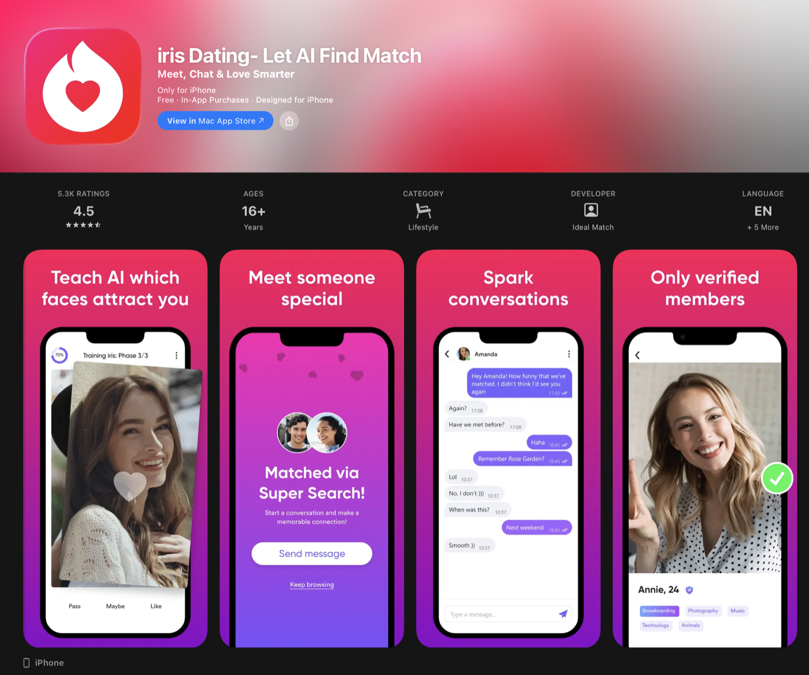

All work

Client work
iris Dating
AI-powered matchmaking that learns the faces and values you are drawn to.
Role
iOS Developer / Team Lead
Worked on
May 2022 — May 2025
Category
Lifestyle · Social Networking
App Store rating
★ 4.5 · 5,742 ratings
On the store since
2019
Published by
Ideal Match Inc

About the app
iris uses artificial intelligence to connect people who share interests, values and even preferred facial features. The model trains on each user's own reactions, so recommendations sharpen the longer someone uses the app.
The product has been featured by TechCrunch and Forbes and passed 2M+ downloads.
What I did
- Led the iOS team through three years of product development.
- Migrated the app from UIKit + RxSwift + MVVM to SwiftUI + The Composable Architecture.
- Developed an AI training model that improved user engagement.
- Implemented real-time chat on Twilio.
- Integrated A/B testing and product analytics across the funnel.
Tech
SwiftSwiftUITCAUIKitRxSwiftCombineTwilioA/B testing